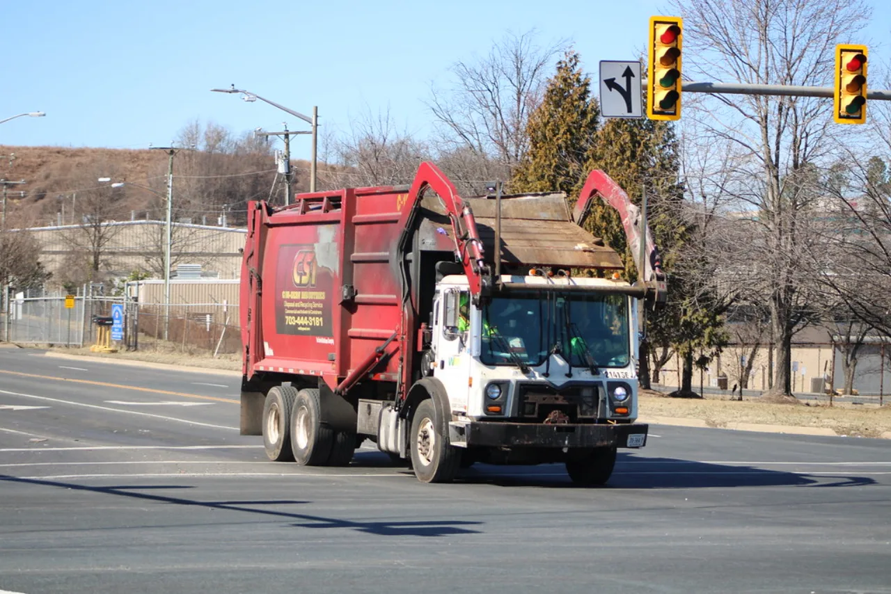

환경 지속가능성 테마를 볼 때 먼저 정리할 점은 산업의 성장성과 투자 수익률이 항상 같은 속도로 움직이지 않는다는 사실입니다. 폐기물 처리 차량과 재활용 시설이 도시 인프라를 담당하는 장면은 눈에 잘 들어오지만, 주가는 결국 그 장면이 매출, 마진, 현금흐름으로 이어지는 시간을 따집니다.
이번 글의 기준은 폐기물 규제, 물 부족, 재활용 의무가 실제 주문으로 바뀌고, 그 주문이 처리 단가, 계약 기간, 재활용 수율, 요금 승인 같은 숫자로 확인되는지입니다. 테마가 뜨거울수록 뉴스는 빠르게 움직이지만, 기업의 비용 구조는 훨씬 느리고 고집스럽게 손익계산서에 남습니다.
특히 처리 시설 투자, 운송비, 규제 준수 비용은 단순한 비용 항목이 아닙니다. 수요가 좋아도 이 비용을 통제하지 못하면 매출 성장률은 높아 보이는데 주당 이익은 따라오지 못할 수 있습니다. 그래서 이 분야에서는 규모보다 질을 먼저 보셔야 합니다.
돈은 어디서 들어오나

지자체, 기업, 유틸리티 고객가 왜 예산을 쓰는지부터 보겠습니다. 구매 이유가 일회성 유행이면 매출은 빠르게 식고, 운영 과정에 깊이 들어간 지출이면 다음 분기에도 반복될 가능성이 높습니다. 폐기물 규제, 물 부족, 재활용 의무는 장기 수요가 될 수 있지만, 회사별로 돈을 받는 방식은 다릅니다.
좋은 기업은 고객이 처음 결제한 뒤에도 사용량을 늘리거나 더 비싼 기능으로 이동하게 만듭니다. 반대로 제품은 좋아 보여도 고객이 예산을 줄일 때 먼저 끊는 서비스라면 높은 성장률이 오래 유지되기 어렵습니다.
따라서 환경 지속가능성 기업을 볼 때는 매출 증가율만 따로 떼어 보지 말고 신규 고객, 기존 고객 확장, 가격 인상, 사용량 증가가 각각 어느 정도 기여했는지 나눠 보는 편이 좋습니다. 같은 20% 성장이라도 속 내용은 전혀 다를 수 있습니다.
마진을 누가 지키나
관련 영상
환경 지속가능성 시장과 투자 포인트를 설명하는 영상
처리 시설 투자, 운송비, 규제 준수 비용은 이 테마의 마진을 가장 먼저 흔드는 변수입니다. 사업이 커질수록 고정비가 낮아지는 구조인지, 오히려 더 많은 설비와 인력을 계속 요구하는 구조인지에 따라 기업 가치는 달라집니다.
투자자는 회사가 비용 상승을 가격에 옮길 수 있는지 확인해야 합니다. 고객이 대체 서비스를 쉽게 고를 수 있으면 가격 전가는 어렵고, 제품이 업무 흐름 안에 깊게 들어가 있으면 비용 상승을 어느 정도 흡수할 수 있습니다.
처리 단가, 계약 기간, 재활용 수율, 요금 승인은 이 질문에 답을 주는 숫자입니다. 회사가 분기 자료에서 이 지표를 꾸준히 공개하고, 설명과 실제 숫자가 같은 방향으로 움직인다면 투자자는 뉴스보다 더 단단한 근거를 갖게 됩니다.
위험은 언제 커지나
정책 변화와 설비 비용 증가은 시장이 좋을 때는 잘 보이지 않다가 기대가 높아진 뒤에 주가를 크게 흔듭니다. 성장 산업일수록 작은 지연이 밸류에이션 조정으로 바로 이어질 수 있습니다.
이 분야의 위험은 대개 세 갈래로 나뉩니다. 첫째는 고객 예산이 생각보다 천천히 집행되는 경우입니다. 둘째는 회사가 먼저 비용을 늘렸는데 매출 전환이 늦어지는 경우입니다. 셋째는 경쟁이 심해지면서 좋은 제품도 가격을 낮춰야 하는 경우입니다.
그래서 분기 실적을 볼 때는 매출이 예상보다 좋았는지보다 수주, 재고, 현금흐름, 고객 유지가 함께 좋아졌는지 확인해야 합니다. 한 지표만 좋아지는 기업보다 여러 지표가 같은 방향으로 움직이는 기업이 더 오래 버팁니다.
확인할 숫자는 무엇인가
가장 실용적인 점검표는 단순합니다. 처리 단가, 계약 기간, 재활용 수율, 요금 승인, 현금흐름, 부채 만기, 고객 집중도, 가격 전가력을 같은 순서로 반복해서 보면 됩니다. 이 순서를 고정하면 매번 다른 뉴스에 흔들리지 않고 기업의 체력을 비교할 수 있습니다.
관련종목을 볼 때도 같은 기준을 적용하는 편이 좋습니다. 미국 주식이 먼저 움직인다고 해서 항상 좋은 것은 아니고, 한국 기업이 공급망 안에서 더 직접적인 수혜를 받을 때도 있습니다. 중요한 것은 어느 회사가 실제 매출과 마진을 더 빨리 확인시켜 주는지입니다.
환경 지속가능성 테마는 장기 기회가 있지만 모든 기업이 같은 결말을 얻지는 못합니다. 사업 모델이 반복 매출을 만들고 비용을 통제하며 고객이 떠나기 어려운 구조를 가진 기업을 골라야 기대가 숫자로 바뀝니다.
투자 판단 전에는 최신 공시, 실적 발표 자료, 사업보고서, 산업 통계를 함께 확인해야 합니다. 이 글은 매수나 매도 추천이 아니라 환경 지속가능성 기업을 비교할 때 놓치기 쉬운 순서를 정리한 정보입니다.
또 하나 확인할 부분은 경쟁사가 같은 시장을 어떤 방식으로 파고드는지입니다. 환경 지속가능성에서는 기술 차이만큼 판매 채널, 고객 지원, 기존 계약의 깊이가 중요합니다. 지자체, 기업, 유틸리티 고객가 이미 쓰고 있는 시스템과 자연스럽게 연결되는 회사는 가격 경쟁에 덜 끌려갈 수 있습니다.
반대로 고객이 시험 도입만 하고 본격 계약을 미루는 구간에서는 숫자가 느리게 나옵니다. 이때는 발표 자료의 문구보다 실제 계약 기간, 해지 조건, 초기 설치비와 반복 사용료의 비중을 보는 편이 좋습니다. 처리 단가, 계약 기간, 재활용 수율, 요금 승인이 좋아 보여도 현금 회수가 늦으면 투자 매력은 낮아질 수 있습니다.
처리 시설 투자, 운송비, 규제 준수 비용이 계속 높아지는 상황에서는 경영진의 설명도 따로 점검해야 합니다. 비용 증가를 일시적 문제라고 말하는지, 가격 정책과 제품 구조를 바꿔 해결하겠다고 말하는지에 따라 다음 분기의 해석이 달라집니다. 같은 비용 부담이라도 회사가 통제할 수 있는 비용과 외부 변수에 끌려가는 비용은 구분해야 합니다.
관련종목을 비교할 때는 먼저 미국 기업의 플랫폼 지위와 한국 기업의 공급망 위치를 나눠 보는 것이 좋습니다. 플랫폼 기업은 고객 데이터와 반복 과금에서 힘을 얻고, 공급망 기업은 주문 잔고와 가동률에서 먼저 신호가 나옵니다. 어느 쪽이 더 좋다는 결론보다 지금 사이클에서 어떤 숫자가 더 빨리 확인되는지를 보는 편이 현실적입니다.
마지막으로 주가가 이미 기대를 크게 반영한 상태인지도 살펴야 합니다. 폐기물 규제, 물 부족, 재활용 의무가 커지는 방향은 맞더라도 밸류에이션이 너무 앞서가면 좋은 실적에도 주가가 쉬어 갈 수 있습니다. 그래서 매수 판단은 테마의 크기, 기업의 실행력, 현재 가격을 함께 놓고 천천히 비교하는 편이 안전합니다.
정책 변화와 설비 비용 증가이 실제로 나타나는 시기에는 좋은 기업과 약한 기업의 차이가 더 분명해집니다. 좋은 기업은 비용을 줄이면서도 핵심 고객을 지키고, 약한 기업은 매출을 유지하려고 할인을 늘립니다. 이 차이를 분기마다 기록해 두면 단기 뉴스보다 사업의 방향을 더 침착하게 볼 수 있습니다.